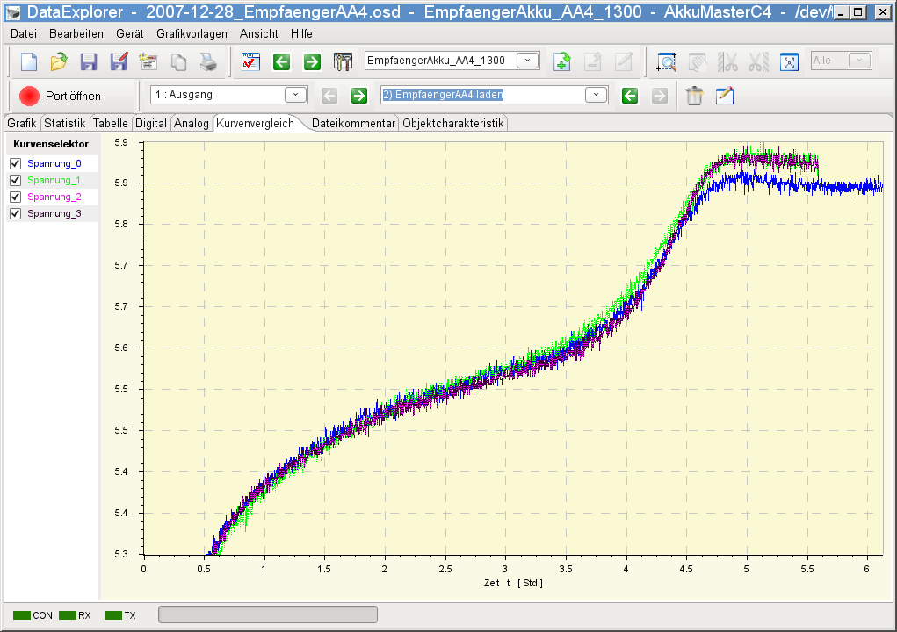

Wie der Name schon sagt, ist das Kurvenvergleichsfenster dazu da, Kurven miteinander zu vergleichen. Im Bild sieht man Spannungskurven von einem alten Akku. Die Kurven wurden wiederholt über einen Zeitraum aufgenommen. Vergleiche machen natürlich nur Sinn, wenn auch die Voraussetzungen, wie die Kurven entstanden sind, möglichst gleich sind. Allein an Hand der Unterschiede der Ladezeit und der Kurvenform, sieht man im Beispiel, dass mit diesem Akku etwas nicht stimmen kann.

Das Vergleichsfenster erlaubt, wie das Grafikfenster, ein Zoomen und Vermessen der Kurven.
Sind Gridlinien im Vergleichsfenster aktiviert, werden Gridlinien in gleicher Form beim nächsten Start der Anwendung wieder hergestellt.
Hinweis: Das Programm verhindert Kurven unterschiedlicher Einheit miteinander zu vergleichen. Das Vergleichsfenster mit den darin enthaltenen Kurven wird in keiner Form gesichert. Der Tabulator selbst wird erst angezeigt, wenn über das Kurvenselktorkontextmenü die erste Kurve in den Kurvenvergleich geladen wird.